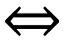
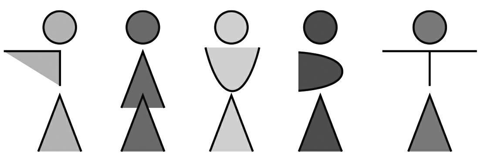
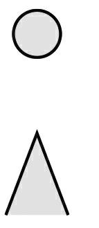
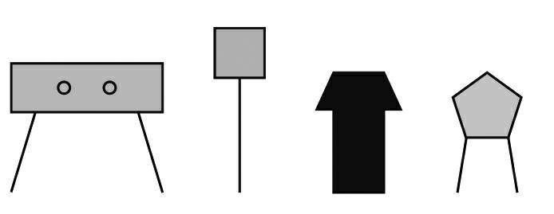
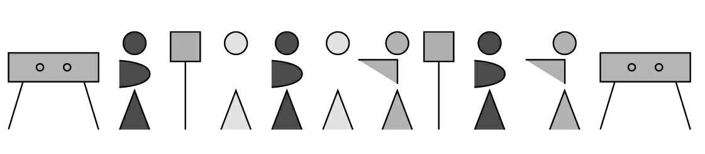

我不久前看到了一张宣传海报，上面大书“抵制丑陋”(1)几个字。每个人都可以在自己工作的领域“抵制丑陋”。对我来说，我的工作涉及的主要领域就是数学，所以我就在这篇文章中尝试抵制被“丑陋”地描述的数学吧。
数学对于很多人来说都是冷冰冰的没有感情的事物，但通过一种新的表述方式也许会让数学变得有趣生动，吸引一大批粉丝。这种尝试对我来说无论如何都显得意义重大，因此在这里我们一起尝试“美化”一下数学吧！
下面这个例子可以较为清楚地表明我的想法：
我们来思考一下最为基础的逻辑学思维法则——逆向思维。逆向思维是逻辑学上的一个基本论证方法，即根据“若P则Q”就可以推导出“若非Q则非P”。在实际生活中可以理解为：根据“如果今天是星期四，那么明天是星期五”，就可以推理得出“如果明天不是星期五，那么今天不是星期四”。
数学家用一个言简意赅的公式来表达这个法则，这个公式看起来似乎没有那么美观：
P⇒Q⇒¬Q⇒¬P
这个思维方式也可以被应用到引文、谚语和格言中，比如马蒂亚斯·克劳迪乌斯（Matthias Claudius）于1786年在《尤里安环游世界》（Urian's Journey Around the World）中写道：“若远途旅行，则必有所述。”利用逆向思维可以得出一句虽然没有那么诗意却内涵相同的话：“如果一个人说不出什么东西，那么他就没有旅行过。”
数学上表述逻辑关系的外在形式变化多端，但内在含义却是相同的，这正是数学的魅力所在。
逻辑学中有几种重要的逻辑关系：否定（“否、不”），并列（“并”），选择（“或”），条件（“如果……就……”），等价（“当……则……”）。这些术语听起来太过枯燥，接下来让我们用一些可爱的图示来引入这些概念，更方便大家理解。
下列图示从左至右依次表示这些逻辑关系：否定（¬），并列（∧），选择（∨），条件（ ⇒），等价（

）。
我们把下面这个符号当作分离符号：

此外，用以下符号表示不同的事件：

很快我们就能从上述枯燥简单的逆向思维抽象公式中得到一个绝妙的“公式”：

如果我们假设第一个事件为P，第二个事件为Q，上述图示组成的“公式”其实就是表示P⇒Q⇒¬Q⇒¬P这个意思。
我努力美化过的数学公式只改变了外在的形式，并没有改变原论述中的逻辑关系和内涵。但这个“公式”看起来反而像垃圾桶上的标志，没有任何数学魅力，我觉得我好像搞砸了。你们觉得呢？
(1) 在德国发起的一场号召活动，希望改造城市中的建筑用地等“丑陋”的地方。